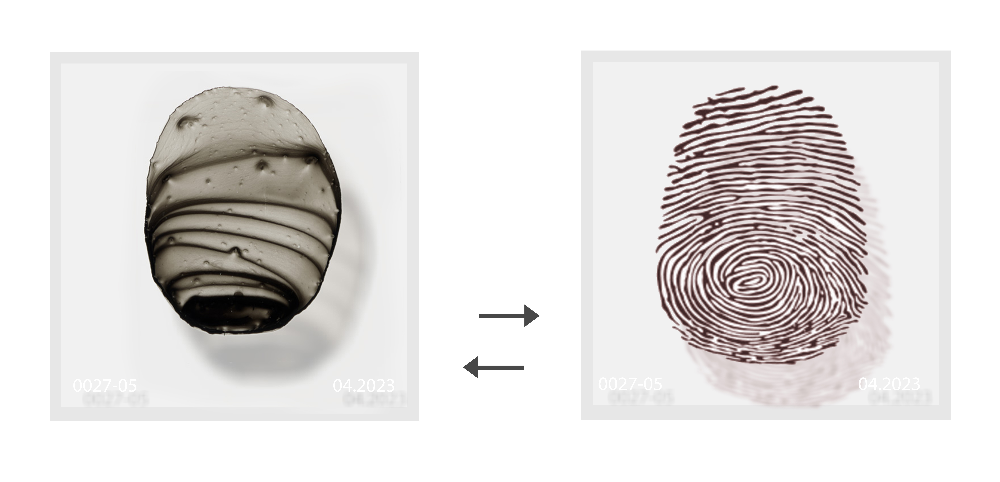

Mining Project
Date: 2023
Medium: Coverslips, ink, acrylic, paper
Dimension: varies
Mining Project is an ongoing project that will be exhibited at least twenty times in different locations around the world. Audiences can contribute their fingerprints to the artwork in exchange for a smaller piece of artwork. Each piece has its own number and specific date to match the information on the newly printed red fingerprint. It will take more than 10 years to complete this project. Minging project was first shown in April, 2023 at Navy Pier, Chicago, and it contained 484 pieces. During the exhibition, more than 100 people of all ages participated in the fingerprint exchange process. As these hundred plus fingerprints are added to the wall of the artwork, they begin to create a new pattern, telling the story of this project. For the second exhibit of this project, more new pieces will be added. With each additional showing, the larger artwork will accumulate new pieces. By the time the project has toured twenty exhibitions, the number of artwork pieces in this project will exceed 10,000. After the twentieth exhibition, all pieces of this project will be shown together, and participating audiences will be able to use the number on the art pieces that they own to retrieve their fingerprint pieces.
